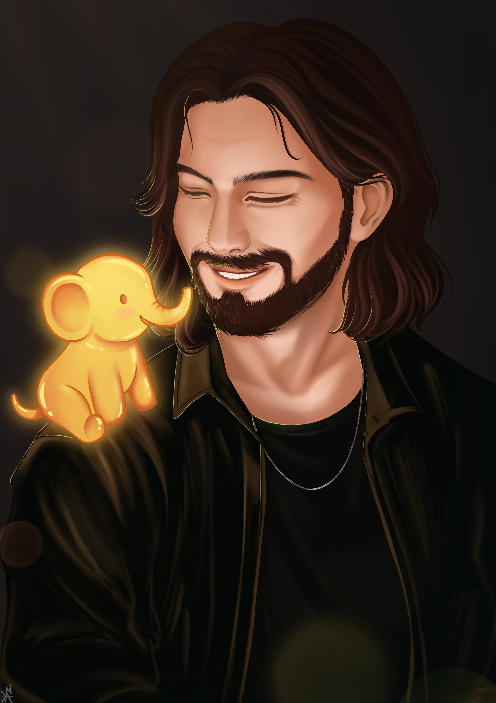
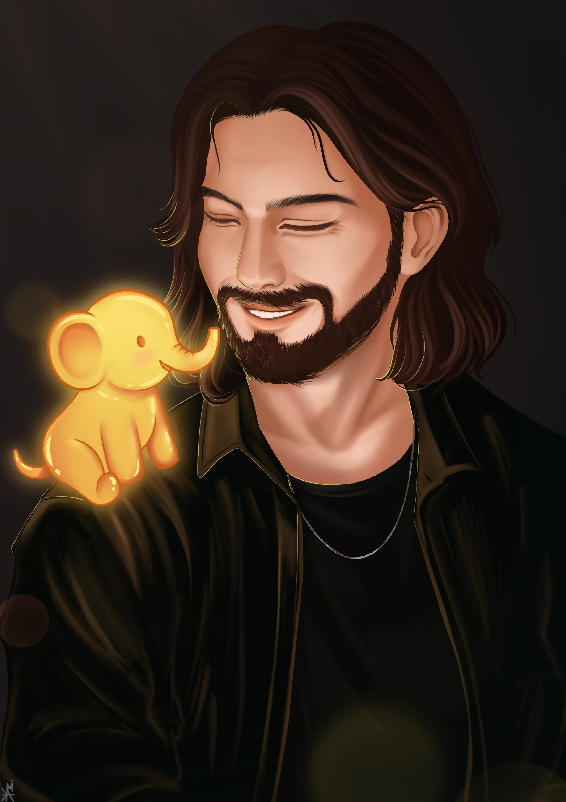

Приветствую тебя во вкладке «Обо мне»! Здесь я хочу раскрыться перед тобой не только как художник, но и как человек. Этот раздел оформлен в формате «вопрос–ответ» — честно, по делу и с душой.
За все свои 26 лет рисование никогда не исчезало из моей жизни. Иногда его было больше, иногда меньше, но я рисовала всегда. Были тёмные, грустные, даже депрессивные иллюстрации — они передавали эмоции обычного подростка и со временем стали моей историей. Я даже сделала собственный блокнот, где каждая страница описывала меня: мои вкусы, предпочтения, хобби, отношения. Пока одни вели дневники с записями о прошедшем дне, я свой день — рисовала.
Много раз опускались руки, накатывали сомнения, и я думала, что рисование — это всё-таки не моё. Я уходила в фотографию (и до сих пор обожаю фотографировать всё вокруг себя), но, как можно заметить, рисование я так и не оставила. В 2020–2021 году у меня появился графический планшет, и я начала изучать всё практически с нуля. Именно тогда у меня начали появляться первые заказы — в которые я сама поначалу не могла поверить.
Я стараюсь делиться с людьми не просто иллюстрациями, а своим маленьким волшебством!
Большинство творческих людей — очень чуткие, ими управляют эмоции, а эмоции переходят на бумагу. В такие моменты хочется забыть о технике и чувствовать каждый мазок, каждый оттенок. Как говорила моя преподавательница в художке: «Почему такие оттенки? Да потому что мы так чувствуем».
Но техника тоже важна. Эксперименты со стилями, разными подходами и механиками — именно на необычное чаще всего падает взгляд.
И заказы, и собственные идеи я вижу как мимолётные картинки в голове, словно там бесконечная лента образов. Я сама их перебираю, отсеиваю лишнее, оставляю то, что откликается. Я очень люблю придумывать концепт рисунка, его историю и историю персонажа. Поэтому, когда поступает заказ — или когда я рисую для зрителей на Twitch — образ часто рождается мгновенно, отталкиваясь от самого человека. Бывало и так, что ко мне приходили без идеи, и в итоге персонажа и концепт я полностью продумывала сама. И это не жалоба — это доверие. А на свою фантазию я пока не жаловалась!
Потому что это точно про меня. Стоит мне загореться — и искры летят из глаз. Главное, чтобы под рукой был лист или планшет. Иногда детали продумываются сразу, а иногда всё идёт так, как идёт — и именно за счёт этого работа получается живой. Я двигаюсь от персонажа к фону, от фона обратно к деталям, и в итоге всё срастается так, будто так и было задумано с самого начала.
Это тот момент, когда ты проживаешь всё внутри рисунка. Каждый штрих, каждая линия — во всё это я вкладываю любовь. Так я медитирую и полностью забываюсь.
Для меня важно отдать себя полностью, чтобы передать идеи, настроение, атмосферу и ощущения заказчика.
Мои работы несут другой посыл.
Хотя меня часто уговаривают рисовать что-то «секси», я пока не готова переступить эту грань. Флирт, нежность, влюблённость — да. Разврат — нет.
Главное — ощущение безопасности и чашечка кофе рядом!
Обычно это комфортный темп работы и рамки, которые я выстраиваю сама. Иногда, честно, интереснее работать с конкретным ТЗ — мозг отключает «автопилот». Но заказы без чёткого описания — это всегда эксперимент. Новые позы, новые задачи, новый опыт. И какой же кайф ощущается после завершения сложной работы. Если нет жёстких сроков — это ещё лучше. В таком случае я беру немного дополнительной оплаты за разработку собственной идеи, потому что это тоже время и творческий ресурс.
Ты получаешь постоянный контакт и фидбек практически 24/7. Все мои заказы за всё время были выполнены в срок — привет моему внутреннему перфекционисту. Я сделаю всё возможное, чтобы воплотить даже самую грандиозную идею. Стоит лишь заглянуть в телеграмм!
 



Мы согласовываем вместе с Вами идею, вносим все поправки и движемся к лайну

Процесс в цвете

Завершение иллюстрации! Можете оставить отзыв касаемо нашей работы
Если у тебя есть идея — давай скорее ее воплотим в реальность!